nixmac Computer Use E2E Evidence
Remote desktop QA driven through Codex Computer Use against the real macOS app. The report summarizes major feature coverage, functional UX/UI checks, screenshots, redacted text evidence, and remote machine metadata.
Verdict: pass
Review Summary
The PR-head run passed on the DXU remote Mac with no failed or inconclusive scenario checks.
PR 63 - Add Computer Use E2E non-blocking PR report
Head: 3366b5c
Review PR Focus Inspect Findings Open Visual Proof Check Remote Metadata
Evidence footprint: 28 screenshots, 31 redacted text snapshots, 1 screenshot video.
Pull Request Focus
PR: 63 - Add Computer Use E2E non-blocking PR report
Refs: main ← fkb/e2e-computer-use-local
User-Visible Focus Candidates
.github/workflows/computer-use-e2e.ymltools/computer-use-e2e/PROPOSAL.mdtools/computer-use-e2e/README.mdtools/computer-use-e2e/V2_PROPOSAL.mdtools/computer-use-e2e/check-remote.mjstools/computer-use-e2e/coverage-manifest.jsontools/computer-use-e2e/run-adversarial.mjstools/computer-use-e2e/run-local.mjstools/computer-use-e2e/run-remote-cua.mjs
Mapped Scenario Focus
- Real provider workflow reaches Review
- Summary tab renders after intent review
- Diff tab renders after intent review
- Build & Test destructive boundary appears before activation
- Step 3 Save / Keep changes persists a change
- Rollback cleanup returns disposable config to clean state
- My History opens and renders
- Scenario results include inspectable visual/text evidence
- Generated HTML report is inspected with Computer Use
Full changed-file list (11)
.github/workflows/build.yaml.github/workflows/computer-use-e2e.yml.gitignoretools/computer-use-e2e/PROPOSAL.mdtools/computer-use-e2e/README.mdtools/computer-use-e2e/V2_PROPOSAL.mdtools/computer-use-e2e/check-remote.mjstools/computer-use-e2e/coverage-manifest.jsontools/computer-use-e2e/run-adversarial.mjstools/computer-use-e2e/run-local.mjstools/computer-use-e2e/run-remote-cua.mjs
PR-Relevant Evidence
| Scenario | Status | Evidence Grade | Primary Artifacts | What Proved It |
|---|---|---|---|---|
| Real provider workflow reaches Review The real provider workflow reached Review or a Review-equivalent state. | pass | action-confirmed operational | screenshots/17-provider-progress-01.pngscreenshots/18-provider-progress-02.pngscreenshots/19-provider-progress-03.pngscreenshots/20-provider-progress-04.pngscreenshots/21-provider-progress-05.pngtexts/17-provider-progress-01.txttexts/18-provider-progress-02.txttexts/19-provider-progress-03.txttexts/20-provider-progress-04.txttexts/21-provider-progress-05.txt | Polling reached Review-equivalent UI with Build & Test/Discard/Summary/Diff controls. |
| Summary tab renders after intent review Summary described the requested bat/Homebrew package intent. | pass | text-confirmed visual-supported | screenshots/22-review-summary.pngtexts/22-review-summary.txt | Summary text must mention the requested package/change domain. |
| Diff tab renders after intent review Diff rendered a candidate Homebrew configuration change for bat. | pass | text-confirmed visual-supported | screenshots/23-review-diff.pngtexts/23-review-diff.txt | Diff text must show the requested package/change in a configuration file. |
| Build & Test destructive boundary appears before activation Build & Test presented a visible confirmation/boundary before activation. | pass | action-confirmed operational | screenshots/24-build-boundary.pngscreenshots/26-step-3-ready.pngtexts/24-build-boundary.txttexts/26-step-3-ready.txt | Build & Test opens a confirmation dialog before activation; disposable runs confirm it and wait for Step 3. |
| Step 3 Save / Keep changes persists a change Step 3 Commit persisted the generated bat/Homebrew change in the disposable config repo and left the worktree clean. | pass | action-confirmed strong | screenshots/26-step-3-ready.pngscreenshots/27-after-commit.pngtexts/26-step-3-ready.txttexts/27-after-commit.txt | In disposable build-confirm mode, Computer Use reaches Step 3, clicks Commit, and the runner verifies the disposable repo HEAD changed with a clean worktree. |
| Rollback cleanup returns disposable config to clean state History restore rollback returned the disposable Homebrew config to pre-test baseline content with a clean worktree; the top-level nix build result symlink and flake.lock refresh were ignored as build artifacts for this fixed Homebrew prompt. | pass | action-confirmed strong | screenshots/28-history-before-restore.pngscreenshots/29-history-restore-preview.pngscreenshots/30-after-history-restore.pngtexts/28-history-before-restore.txttexts/29-history-restore-preview.txttexts/30-after-history-restore.txt | After Save, Computer Use opens History, restores the pre-test baseline commit, and the runner verifies HEAD returned to that baseline with a clean worktree. |
| My History opens and renders History rendered a visible state. | pass | action-confirmed operational | screenshots/07-history.pngtexts/07-history.txt | Computer Use opened History and captured a visible history/empty state. |
| Scenario results include inspectable visual/text evidence Every passing scenario has linked text proof, and required non-sensitive screenshots passed binding visual signal checks. | pass | text-confirmed weak | No primary artifact linked. | Every passing scenario must have linked proof artifacts, and required non-sensitive screenshots must pass deterministic visual signal checks. |
| Generated HTML report is inspected with Computer Use Computer Use inspected the generated report in Safari; report text and evidence sections were visible. | pass | action-confirmed operational | screenshots/28-report-inspection-Safari.pngtexts/28-report-inspection-Safari.txt | Computer Use opens the generated report on the remote Mac and sees report sections. |
Findings
Failures are shown first, then inconclusive checks. Passing checks stay collapsed unless a reviewer wants the full inventory.
Failures
| Scenario | Status | Evidence Grade | Primary Artifacts | What Proved It / Why It Matters |
|---|---|---|---|---|
| None. | ||||
Inconclusive
| Scenario | Status | Evidence Grade | Primary Artifacts | What Proved It / Why It Matters |
|---|---|---|---|---|
| None. | ||||
Passing Checks (24)
| Scenario | Status | Evidence Grade | Primary Artifacts | What Proved It / Why It Matters |
|---|---|---|---|---|
| App launches and first screen is usable Computer Use saw the nixmac app window, prompt surface, progress stepper, and top-level controls. | pass | action-confirmed operational | screenshots/01-launch.pngtexts/01-launch.txt | Accessibility text shows the nixmac window, Settings/History/Feedback controls, stepper, prompt text area, and disabled Send button. |
| Update banner does not block the main workflow No dismissible update banner was visible; no banner blocked the main workflow. | pass | text-confirmed visual-supported | screenshots/01-launch.pngtexts/01-launch.txt | Runner checks for a visible Dismiss button. If present, it dismisses it; if absent, it proves no update banner blocked the initial UI. |
| Settings General tab visibly renders Settings opened and General-related content was visible. | pass | action-confirmed operational | screenshots/02-settings-general.pngtexts/02-settings-general.txt | Computer Use clicked Settings and captured the General tab content. |
| Settings AI Models tab visibly renders AI Models settings content was visible with provider/model controls. | pass | action-confirmed operational | screenshots/03-settings-ai-models.pngtexts/03-settings-ai-models.txt | Computer Use opened AI Models and captured provider/model/build controls. |
| Settings API Keys tab visibly renders API Keys content was visible after Computer Use polling, including OpenRouter/API key controls. | pass | text-confirmed weak | texts/04-settings-api-keys-01.txt | Sensitive screenshot omitted; redacted accessibility text must show API Keys/OpenRouter/API-key controls. |
| Settings Preferences tab visibly renders Preferences settings content was visible with confirmation controls. | pass | action-confirmed operational | screenshots/05-settings-preferences.pngtexts/05-settings-preferences.txt | Computer Use opened Preferences and captured confirmation controls. |
| My History opens and renders History rendered a visible state. | pass | action-confirmed operational | screenshots/07-history.pngtexts/07-history.txt | Computer Use opened History and captured a visible history/empty state. |
| Console opens and renders Console rendered visible content. | pass | text-confirmed weak | texts/09-console.txt | Sensitive screenshot omitted; redacted accessibility text must show Console/log content. |
| Give Feedback opens and can be cancelled Feedback dialog rendered and no submission was made. | pass | action-confirmed operational | screenshots/11-feedback.pngscreenshots/12-home-after-feedback.pngtexts/11-feedback.txttexts/12-home-after-feedback.txt | Computer Use opened and cancelled the feedback dialog. |
| Report Issue opens and can be cancelled Report Issue dialog rendered and no submission was made. | pass | action-confirmed operational | screenshots/13-report-issue.pngscreenshots/14-home-after-report-issue.pngtexts/13-report-issue.txttexts/14-home-after-report-issue.txt | Computer Use opened and cancelled the report issue dialog. |
| Home suggestion cards are visible/clickable A suggestion card was clicked and the UI remained usable. | pass | action-confirmed operational | screenshots/15-suggestion-card.pngtexts/15-suggestion-card.txt | Computer Use found and clicked a suggestion card; the UI stayed usable afterward. |
| A typed real intent can be submitted Computer Use entered the real prompt into the app prompt field. | pass | action-confirmed operational | screenshots/16-typed-intent.pngtexts/16-typed-intent.txt | Prompt text appears in the Computer Use state after set_value. |
| Real provider workflow reaches Review The real provider workflow reached Review or a Review-equivalent state. | pass | action-confirmed operational | screenshots/17-provider-progress-01.pngscreenshots/18-provider-progress-02.pngscreenshots/19-provider-progress-03.pngscreenshots/20-provider-progress-04.pngscreenshots/21-provider-progress-05.pngtexts/17-provider-progress-01.txttexts/18-provider-progress-02.txttexts/19-provider-progress-03.txttexts/20-provider-progress-04.txttexts/21-provider-progress-05.txt | Polling reached Review-equivalent UI with Build & Test/Discard/Summary/Diff controls. |
| Summary tab renders after intent review Summary described the requested bat/Homebrew package intent. | pass | text-confirmed visual-supported | screenshots/22-review-summary.pngtexts/22-review-summary.txt | Summary text must mention the requested package/change domain. |
| Diff tab renders after intent review Diff rendered a candidate Homebrew configuration change for bat. | pass | text-confirmed visual-supported | screenshots/23-review-diff.pngtexts/23-review-diff.txt | Diff text must show the requested package/change in a configuration file. |
| Build & Test destructive boundary appears before activation Build & Test presented a visible confirmation/boundary before activation. | pass | action-confirmed operational | screenshots/24-build-boundary.pngscreenshots/26-step-3-ready.pngtexts/24-build-boundary.txttexts/26-step-3-ready.txt | Build & Test opens a confirmation dialog before activation; disposable runs confirm it and wait for Step 3. |
| Step 3 Save / Keep changes persists a change Step 3 Commit persisted the generated bat/Homebrew change in the disposable config repo and left the worktree clean. | pass | action-confirmed strong | screenshots/26-step-3-ready.pngscreenshots/27-after-commit.pngtexts/26-step-3-ready.txttexts/27-after-commit.txt | In disposable build-confirm mode, Computer Use reaches Step 3, clicks Commit, and the runner verifies the disposable repo HEAD changed with a clean worktree. |
| Rollback cleanup returns disposable config to clean state History restore rollback returned the disposable Homebrew config to pre-test baseline content with a clean worktree; the top-level nix build result symlink and flake.lock refresh were ignored as build artifacts for this fixed Homebrew prompt. | pass | action-confirmed strong | screenshots/28-history-before-restore.pngscreenshots/29-history-restore-preview.pngscreenshots/30-after-history-restore.pngtexts/28-history-before-restore.txttexts/29-history-restore-preview.txttexts/30-after-history-restore.txt | After Save, Computer Use opens History, restores the pre-test baseline commit, and the runner verifies HEAD returned to that baseline with a clean worktree. |
| Discard confirmation is guarded and only confirmed in disposable state Discard was intentionally not exercised because the stronger Step 3 save plus History restore cleanup path returned the disposable config to baseline. | pass | guardrail-confirmed operational | screenshots/29-history-restore-preview.pngscreenshots/30-after-history-restore.pngtexts/29-history-restore-preview.txttexts/30-after-history-restore.txt | Discard opens a confirmation boundary when used. In full-lifecycle runs, the stronger History restore cleanup path can supersede Discard and is proven by rollback artifacts. |
| Core UX/UI surfaces are captured and inspectable Screenshots/text snapshots cover the core app shell, settings, support dialogs, prompt input, and provider flow. | pass | text-confirmed visual-supported | screenshots/01-launch.pngscreenshots/02-settings-general.pngscreenshots/03-settings-ai-models.pngscreenshots/05-settings-preferences.pngscreenshots/07-history.pngscreenshots/11-feedback.pngscreenshots/13-report-issue.pngscreenshots/16-typed-intent.pngtexts/01-launch.txttexts/02-settings-general.txttexts/03-settings-ai-models.txttexts/05-settings-preferences.txttexts/07-history.txttexts/11-feedback.txttexts/13-report-issue.txttexts/16-typed-intent.txt | Required core UI surfaces have screenshot and text artifacts. |
| Scenario results include inspectable visual/text evidence Every passing scenario has linked text proof, and required non-sensitive screenshots passed binding visual signal checks. | pass | text-confirmed weak | No primary artifact linked. | Every passing scenario must have linked proof artifacts, and required non-sensitive screenshots must pass deterministic visual signal checks. |
| Main branch user-visible coverage stays mapped Coverage manifest v1 maps 13 user-visible surfaces to scenarios or explicit waivers. Explicit waivers: homebrew-badge: Not yet deterministic in the remote major-feature lane; needs a fixture with Homebrew installed and a known untracked tap/brew/cask diff before the suite can honestly claim coverage for the badge popover and Add to config action. | onboarding-permissions: Current remote lane starts from a configured app state. This must become a dedicated clean-profile Computer Use scenario before the suite can honestly claim full main coverage. | sudo-local-activation-fixture: The DXU remote lane disables sudo_local in the disposable fixture because unattended MacinCloud AppleScript activation can hang while creating /etc/pam.d/sudo_local. This is an explicit CI fixture waiver, not proof that the production sudo_local path works. | preview-indicator: Not yet in the remote major-feature lane; needs either a deterministic preview-state setup or a real workflow that activates it. | pass | manifest-confirmed operational | No primary artifact linked. | A repo-local coverage manifest maps major user-visible surfaces on main to Computer Use scenarios or explicit waivers, and the runner scans for unmapped candidate files. |
| PR-specific user-visible behavior is covered when applicable User-visible changed files were mapped to passing Computer Use scenarios and surfaced at the top of the report: Real provider workflow reaches Review, Summary tab renders after intent review, Diff tab renders after intent review, Build & Test destructive boundary appears before activation, Step 3 Save / Keep changes persists a change, Rollback cleanup returns disposable config to clean state, My History opens and renders, Scenario results include inspectable visual/text evidence, Generated HTML report is inspected with Computer Use | pass | not-run not-proved | No primary artifact linked. | Requires PR metadata and changed-file/user-visible focus input. |
| Generated HTML report is inspected with Computer Use Computer Use inspected the generated report in Safari; report text and evidence sections were visible. | pass | action-confirmed operational | screenshots/28-report-inspection-Safari.pngtexts/28-report-inspection-Safari.txt | Computer Use opens the generated report on the remote Mac and sees report sections. |
Evidence Quality
Deterministic verdict remains source of truth. Evidence strength and assertion risk explain how much independent proof backs each scenario. Non-sensitive screenshots are binding corroborating evidence: missing, blank, occluded, or low-signal required screenshots can fail their owning scenario.
Visual Assertion Results
| Scenario | Visual Status | Checks | Result |
|---|---|---|---|
App launches and first screen is usablelaunch |
pass | 4 | Required screenshots decoded and broad visual regions contained visible signal. |
Settings General tab visibly renderssettingsGeneral |
pass | 3 | Required screenshots decoded and broad visual regions contained visible signal. |
Settings AI Models tab visibly renderssettingsAIModels |
pass | 3 | Required screenshots decoded and broad visual regions contained visible signal. |
Settings Preferences tab visibly renderssettingsPreferences |
pass | 3 | Required screenshots decoded and broad visual regions contained visible signal. |
My History opens and rendershistory |
pass | 3 | Required screenshots decoded and broad visual regions contained visible signal. |
Give Feedback opens and can be cancelledfeedback |
pass | 3 | Required screenshots decoded and broad visual regions contained visible signal. |
Report Issue opens and can be cancelledreportIssue |
pass | 3 | Required screenshots decoded and broad visual regions contained visible signal. |
Home suggestion cards are visible/clickablesuggestionCards |
pass | 3 | Required screenshots decoded and broad visual regions contained visible signal. |
A typed real intent can be submittedtypedIntent |
pass | 3 | Required screenshots decoded and broad visual regions contained visible signal. |
Real provider workflow reaches Reviewreview |
pass | 3 | Required screenshots decoded and broad visual regions contained visible signal. |
Summary tab renders after intent reviewsummary |
pass | 3 | Required screenshots decoded and broad visual regions contained visible signal. |
Diff tab renders after intent reviewdiff |
pass | 3 | Required screenshots decoded and broad visual regions contained visible signal. |
Build & Test destructive boundary appears before activationbuildBoundary |
pass | 3 | Required screenshots decoded and broad visual regions contained visible signal. |
Step 3 Save / Keep changes persists a changesaveFlow |
pass | 3 | Required screenshots decoded and broad visual regions contained visible signal. |
Rollback cleanup returns disposable config to clean staterollbackCleanup |
pass | 6 | Required screenshots decoded and broad visual regions contained visible signal. |
Generated HTML report is inspected with Computer UsereportInspection |
pass | 3 | Required screenshots decoded and broad visual regions contained visible signal. |
Evidence Strength
| Strength | Count |
|---|---|
| strong | 2 |
| operational | 14 |
| visual-supported | 4 |
| weak | 3 |
| not-proved | 1 |
Elevated Assertion Risk
| Scenario | Risk | Why |
|---|---|---|
| Settings API Keys tab visibly renders accessibility_text, sensitive_redaction |
high | The claim depends on accessibility text without a screenshot, usually due sensitive-surface redaction. |
| Console opens and renders accessibility_text, sensitive_redaction |
high | The claim depends on accessibility text without a screenshot, usually due sensitive-surface redaction. |
| Update banner does not block the main workflow accessibility_text, action_result, visual_heuristic |
medium | Accessibility text is the semantic assertion source without binding screenshot checks. |
| Discard confirmation is guarded and only confirmed in disposable state accessibility_text, action_result, confirmation_boundary, visual_heuristic |
medium | Accessibility text is the semantic assertion source without binding screenshot checks. |
| Core UX/UI surfaces are captured and inspectable artifact_quality, accessibility_text, visual_heuristic |
medium | Accessibility text is the semantic assertion source without binding screenshot checks. |
Failure Classification
No non-pass scenarios require failure classification.
Confirmation boundaries
- Build & Test boundary observed and confirmed in proven disposable state.
Full assertion-risk table
| Scenario | Risk | Why |
|---|---|---|
| App launches and first screen is usable accessibility_text, visual_heuristic, visual_signalstats |
low | Accessibility text is the semantic assertion source and screenshot signal checks corroborate non-sensitive visual evidence. |
| Update banner does not block the main workflow accessibility_text, action_result, visual_heuristic |
medium | Accessibility text is the semantic assertion source without binding screenshot checks. |
| Settings General tab visibly renders accessibility_text, action_result, visual_heuristic, visual_signalstats |
low | Accessibility text is the semantic assertion source and screenshot signal checks corroborate non-sensitive visual evidence. |
| Settings AI Models tab visibly renders accessibility_text, action_result, visual_heuristic, visual_signalstats |
low | Accessibility text is the semantic assertion source and screenshot signal checks corroborate non-sensitive visual evidence. |
| Settings API Keys tab visibly renders accessibility_text, sensitive_redaction |
high | The claim depends on accessibility text without a screenshot, usually due sensitive-surface redaction. |
| Settings Preferences tab visibly renders accessibility_text, action_result, visual_heuristic, visual_signalstats |
low | Accessibility text is the semantic assertion source and screenshot signal checks corroborate non-sensitive visual evidence. |
| My History opens and renders accessibility_text, action_result, visual_heuristic, visual_signalstats |
low | Accessibility text is the semantic assertion source and screenshot signal checks corroborate non-sensitive visual evidence. |
| Console opens and renders accessibility_text, sensitive_redaction |
high | The claim depends on accessibility text without a screenshot, usually due sensitive-surface redaction. |
| Give Feedback opens and can be cancelled accessibility_text, action_result, visual_heuristic, visual_signalstats |
low | Accessibility text is the semantic assertion source and screenshot signal checks corroborate non-sensitive visual evidence. |
| Report Issue opens and can be cancelled accessibility_text, action_result, visual_heuristic, visual_signalstats |
low | Accessibility text is the semantic assertion source and screenshot signal checks corroborate non-sensitive visual evidence. |
| Home suggestion cards are visible/clickable accessibility_text, action_result, visual_heuristic, visual_signalstats |
low | Accessibility text is the semantic assertion source and screenshot signal checks corroborate non-sensitive visual evidence. |
| A typed real intent can be submitted accessibility_text, action_result, visual_heuristic, visual_signalstats |
low | Accessibility text is the semantic assertion source and screenshot signal checks corroborate non-sensitive visual evidence. |
| Real provider workflow reaches Review accessibility_text, provider_state, action_result, visual_heuristic, visual_signalstats |
low | Accessibility text is the semantic assertion source and screenshot signal checks corroborate non-sensitive visual evidence. |
| Summary tab renders after intent review accessibility_text, provider_state, visual_heuristic, visual_signalstats |
low | Accessibility text is the semantic assertion source and screenshot signal checks corroborate non-sensitive visual evidence. |
| Diff tab renders after intent review accessibility_text, provider_state, visual_heuristic, visual_signalstats |
low | Accessibility text is the semantic assertion source and screenshot signal checks corroborate non-sensitive visual evidence. |
| Build & Test destructive boundary appears before activation accessibility_text, action_result, confirmation_boundary, visual_heuristic, visual_signalstats |
low | Accessibility text is the semantic assertion source and screenshot signal checks corroborate non-sensitive visual evidence. |
| Step 3 Save / Keep changes persists a change accessibility_text, action_result, remote_state, visual_heuristic, visual_signalstats |
low | The claim has non-UI state or manifest proof in addition to UI evidence. |
| Rollback cleanup returns disposable config to clean state accessibility_text, action_result, remote_state, visual_heuristic, visual_signalstats |
low | The claim has non-UI state or manifest proof in addition to UI evidence. |
| Discard confirmation is guarded and only confirmed in disposable state accessibility_text, action_result, confirmation_boundary, visual_heuristic |
medium | Accessibility text is the semantic assertion source without binding screenshot checks. |
| Core UX/UI surfaces are captured and inspectable artifact_quality, accessibility_text, visual_heuristic |
medium | Accessibility text is the semantic assertion source without binding screenshot checks. |
| Scenario results include inspectable visual/text evidence artifact_quality, visual_heuristic |
low | The scenario is not primarily an accessibility-text assertion. |
| Main branch user-visible coverage stays mapped coverage_manifest |
low | The claim has non-UI state or manifest proof in addition to UI evidence. |
| PR-specific user-visible behavior is covered when applicable pr_metadata, coverage_manifest |
low | The claim has non-UI state or manifest proof in addition to UI evidence. |
| Generated HTML report is inspected with Computer Use accessibility_text, artifact_quality, visual_heuristic, visual_signalstats |
low | Accessibility text is the semantic assertion source and screenshot signal checks corroborate non-sensitive visual evidence. |
Legacy grade mapping
| V1 Grade | V2 Strength |
|---|---|
action-confirmed | operational |
text-confirmed | visual-supported |
guardrail-confirmed | operational |
manifest-confirmed | operational |
calibration | weak |
not-run | not-proved |
insufficient | not-proved |
Taxonomy definitions
| Class | Definition |
|---|---|
app | The app UI/state did not behave as expected. |
provider | The real provider returned a billing, rate-limit, timeout, or model error. |
credential | A provider key was missing, invalid, unavailable, or not injected into the launched app process. |
remote_infra | DXU, SSH, launchd, app-server, macOS permissions, or remote activation infrastructure blocked the run. |
harness | Computer Use actions, artifact generation, report rendering, or runner bookkeeping failed. |
coverage | The suite lacks a scenario, manifest mapping, PR focus, or waiver for the behavior. |
inconclusive | The runner could not prove either pass or fail. |
Visual Proof
Screenshots are binding corroborating assertions for non-sensitive visual scenarios. Accessibility text, action events, provider state, and remote git state remain the semantic proof; screenshot signal checks catch missing, blank, occluded, or low-signal visual evidence.
Real provider workflow reaches Review
pass action-confirmed
Assertion: Polling reached Review-equivalent UI with Build & Test/Discard/Summary/Diff controls.
Not proved: Does not prove Save/commit.
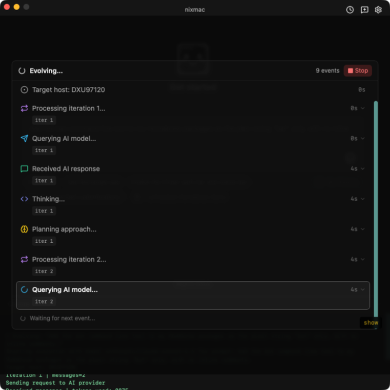
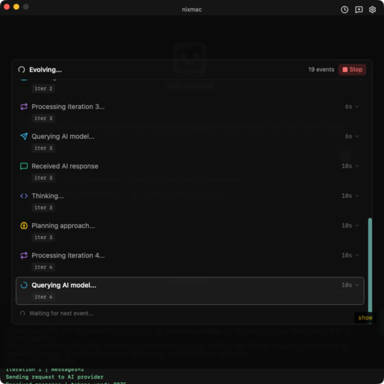
texts/17-provider-progress-01.txt
Computer Use state (CUA App Version: 758) <app_state> App=com.darkmatter.nixmac (pid 90886) Window: "nixmac", App: nixmac. 0 standard window nixmac, Secondary Actions: Raise 1 scroll area 2 HTML content Description: nixmac, URL: tauri://localhost 3 heading nixmac, Value: 3 4 text nixmac 5 button History
texts/18-provider-progress-02.txt
Computer Use state (CUA App Version: 758) <app_state> App=com.darkmatter.nixmac (pid 90886) Window: "nixmac", App: nixmac. 0 standard window nixmac, Secondary Actions: Raise 1 scroll area 2 HTML content Description: nixmac, URL: tauri://localhost 3 heading nixmac, Value: 3 4 text nixmac 5 button History
Summary tab renders after intent review
pass text-confirmed
Assertion: Summary text must mention the requested package/change domain.
Not proved: Does not prove file persistence.
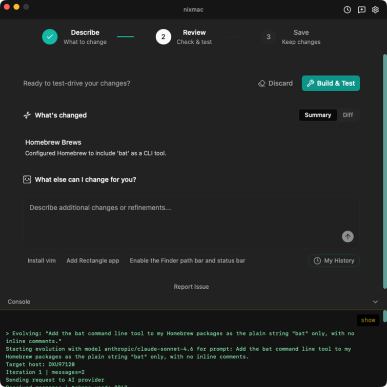
Summary after Reviewtexts/22-review-summary.txt
Computer Use state (CUA App Version: 758) <app_state> App=com.darkmatter.nixmac (pid 90886) Window: "nixmac", App: nixmac. 0 standard window nixmac, Secondary Actions: Raise 1 scroll area 2 HTML content Description: nixmac, URL: tauri://localhost 3 heading nixmac, Value: 3 4 text nixmac 5 button History
Diff tab renders after intent review
pass text-confirmed
Assertion: Diff text must show the requested package/change in a configuration file.
Not proved: Does not prove the change builds or saves.
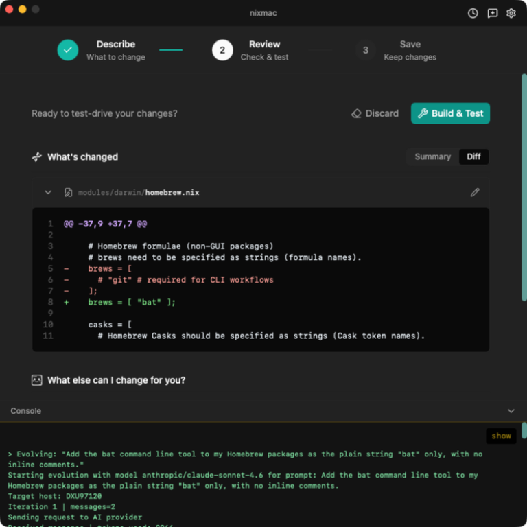
Diff includes requested changetexts/23-review-diff.txt
Computer Use state (CUA App Version: 758) <app_state> App=com.darkmatter.nixmac (pid 90886) Window: "nixmac", App: nixmac. 0 standard window nixmac, Secondary Actions: Raise 1 scroll area 2 HTML content Description: nixmac, URL: tauri://localhost 3 heading nixmac, Value: 3 4 text nixmac 5 button History
Build & Test destructive boundary appears before activation
pass action-confirmed
Assertion: Build & Test opens a confirmation dialog before activation; disposable runs confirm it and wait for Step 3.
Not proved: Without explicit disposable build-confirm mode, the runner still cancels at the boundary.
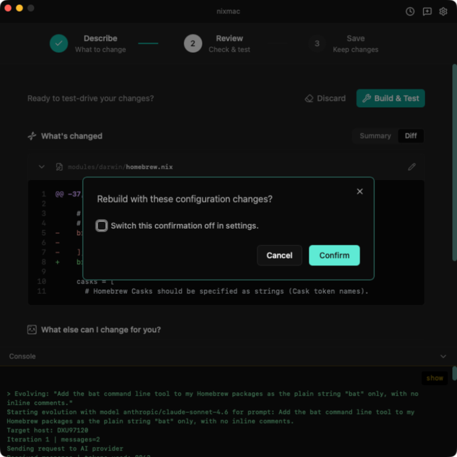
Confirm button Step 3 active
Commit controls
Step 3 active
Commit controls
texts/24-build-boundary.txt
Computer Use state (CUA App Version: 758) <app_state> App=com.darkmatter.nixmac (pid 90886) Window: "nixmac", App: nixmac. 0 standard window nixmac, Secondary Actions: Raise 1 scroll area 2 HTML content Description: nixmac, URL: tauri://localhost 3 container Notifications alt+T 4 container Confirm Action 5 heading Confirm Action, Value: 2
texts/26-step-3-ready.txt
Computer Use state (CUA App Version: 758) <app_state> App=com.darkmatter.nixmac (pid 90886) Window: "nixmac", App: nixmac. 0 standard window nixmac, Secondary Actions: Raise 1 scroll area 2 HTML content Description: nixmac, URL: tauri://localhost 3 heading nixmac, Value: 3 4 text nixmac 5 button History
Step 3 Save / Keep changes persists a change
pass action-confirmed
Assertion: In disposable build-confirm mode, Computer Use reaches Step 3, clicks Commit, and the runner verifies the disposable repo HEAD changed with a clean worktree.
Not proved: When disposable build-confirm mode is not enabled, Save remains untested.
Step 3 active
Commit controls
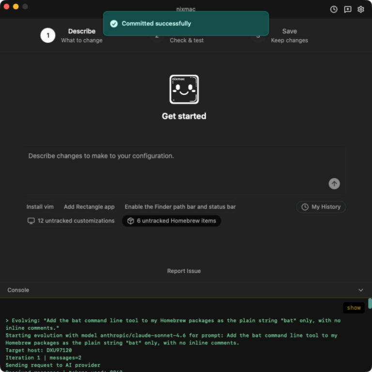
Saved commit statetexts/26-step-3-ready.txt
Computer Use state (CUA App Version: 758) <app_state> App=com.darkmatter.nixmac (pid 90886) Window: "nixmac", App: nixmac. 0 standard window nixmac, Secondary Actions: Raise 1 scroll area 2 HTML content Description: nixmac, URL: tauri://localhost 3 heading nixmac, Value: 3 4 text nixmac 5 button History
texts/27-after-commit.txt
Computer Use state (CUA App Version: 758) <app_state> App=com.darkmatter.nixmac (pid 90886) Window: "nixmac", App: nixmac. 0 standard window nixmac, Secondary Actions: Raise 1 scroll area 2 HTML content Description: nixmac, URL: tauri://localhost 3 heading nixmac, Value: 3 4 text nixmac 5 button History
Rollback cleanup returns disposable config to clean state
pass action-confirmed
Assertion: After Save, Computer Use opens History, restores the pre-test baseline commit, and the runner verifies HEAD returned to that baseline with a clean worktree.
Not proved: Only runs when Save succeeded and a restorable disposable baseline exists.
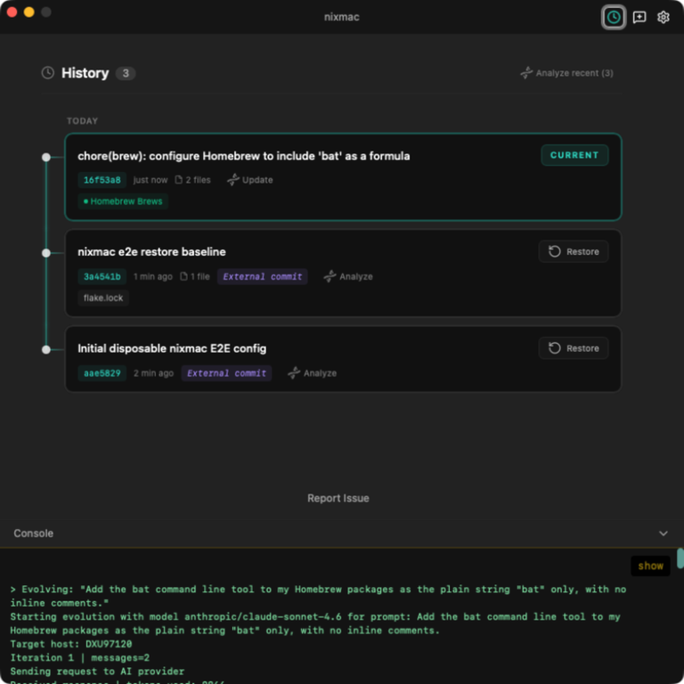
History restore controls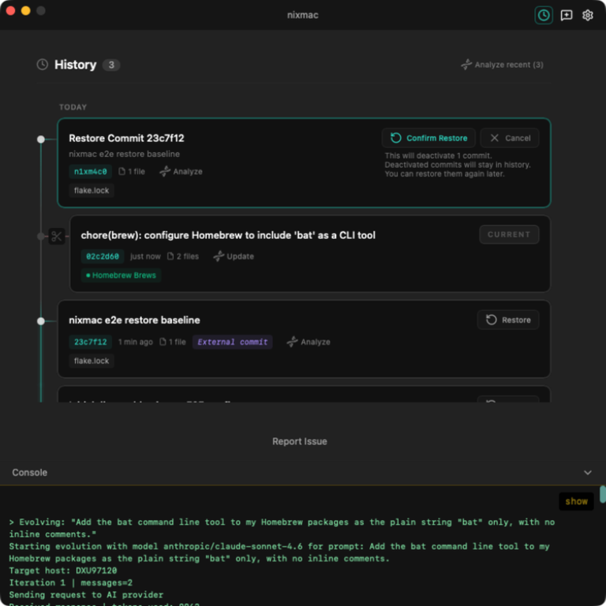
Confirm restore previewtexts/28-history-before-restore.txt
Computer Use state (CUA App Version: 758) <app_state> App=com.darkmatter.nixmac (pid 90886) Window: "nixmac", App: nixmac. 0 standard window nixmac, Secondary Actions: Raise 1 scroll area 2 HTML content Description: nixmac, URL: tauri://localhost 3 heading nixmac, Value: 3 4 text nixmac 5 button History
texts/29-history-restore-preview.txt
Computer Use state (CUA App Version: 758) <app_state> App=com.darkmatter.nixmac (pid 90886) Window: "nixmac", App: nixmac. 0 standard window nixmac, Secondary Actions: Raise 1 scroll area 2 HTML content Description: nixmac, URL: tauri://localhost 3 heading nixmac, Value: 3 4 text nixmac 5 button History
Generated HTML report is inspected with Computer Use
pass action-confirmed
Assertion: Computer Use opens the generated report on the remote Mac and sees report sections.
Not proved: Does not prove a human reviewed every screenshot.
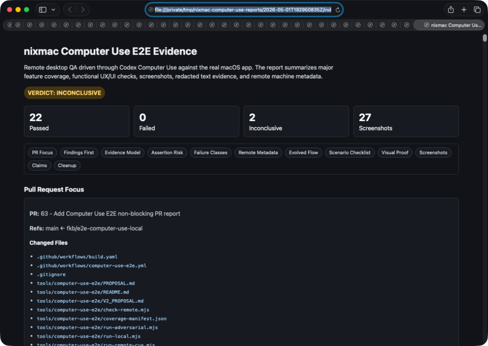
texts/28-report-inspection-Safari.txt
Computer Use state (CUA App Version: 758) <app_specific_instructions> ## Browser Computer Use When navigating to a new website or starting a separate web task, prefer opening a new tab instead of reusing the current tab; reuse the current tab only when the user explicitly asks to continue there or when the current page is clearly the right place to continue the existing workflow. </app_specific_instructions> <app_state> App=com.apple.Safari (pid 388) Window: "nixmac Computer Use E2E Evidence", App: Safari. 0 standard window nixmac Computer Use E2E Evidence, ID: SafariWindow?IsSecure=false&UUID=858A5D8A-FDE8-4952-9215-0C7DE118A883, Secondary Actions: Raise 1 split group
My History opens and renders
pass action-confirmed
Assertion: Computer Use opened History and captured a visible history/empty state.
Not proved: Current run does not prove a newly saved change appears there.
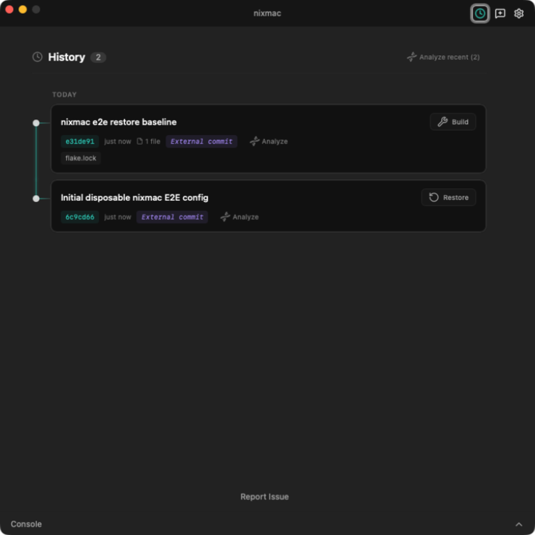
History surfacetexts/07-history.txt
Computer Use state (CUA App Version: 758) <app_state> App=com.darkmatter.nixmac (pid 90886) Window: "nixmac", App: nixmac. 0 standard window nixmac, Secondary Actions: Raise 1 scroll area 2 HTML content Description: nixmac, URL: tauri://localhost 3 heading nixmac, Value: 3 4 text nixmac 5 button History
Additional passing visual/text proof (15)
App launches and first screen is usable
pass action-confirmed
Assertion: Accessibility text shows the nixmac window, Settings/History/Feedback controls, stepper, prompt text area, and disabled Send button.
Not proved: Does not prove provider or config state.
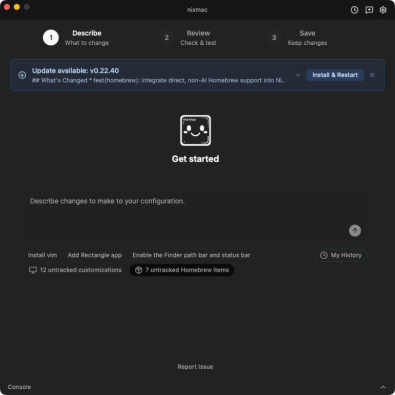
Step 1 active Save step inactive Prompt field Send disabledtexts/01-launch.txt
Computer Use state (CUA App Version: 758) <app_state> App=com.darkmatter.nixmac (pid 90886) Window: "nixmac", App: nixmac. 0 standard window nixmac, Secondary Actions: Raise 1 scroll area 2 HTML content Description: nixmac, URL: tauri://localhost 3 heading nixmac, Value: 3 4 text nixmac 5 button History
Update banner does not block the main workflow
pass text-confirmed
Assertion: Runner checks for a visible Dismiss button. If present, it dismisses it; if absent, it proves no update banner blocked the initial UI.
Not proved: The explicit dismiss interaction is only tested on runs where a banner is actually present.
texts/01-launch.txt
Computer Use state (CUA App Version: 758) <app_state> App=com.darkmatter.nixmac (pid 90886) Window: "nixmac", App: nixmac. 0 standard window nixmac, Secondary Actions: Raise 1 scroll area 2 HTML content Description: nixmac, URL: tauri://localhost 3 heading nixmac, Value: 3 4 text nixmac 5 button History
Settings General tab visibly renders
pass action-confirmed
Assertion: Computer Use clicked Settings and captured the General tab content.
Not proved: Does not persist setting edits.
 Settings content
Settings content
texts/02-settings-general.txt
Computer Use state (CUA App Version: 758) <app_state> App=com.darkmatter.nixmac (pid 90886) Window: "nixmac", App: nixmac. 0 standard window nixmac, Secondary Actions: Raise 1 scroll area 2 HTML content Description: nixmac, URL: tauri://localhost 3 heading nixmac, Value: 3 4 text nixmac 5 button History
Settings AI Models tab visibly renders
pass action-confirmed
Assertion: Computer Use opened AI Models and captured provider/model/build controls.
Not proved: Does not change models or verify every provider.
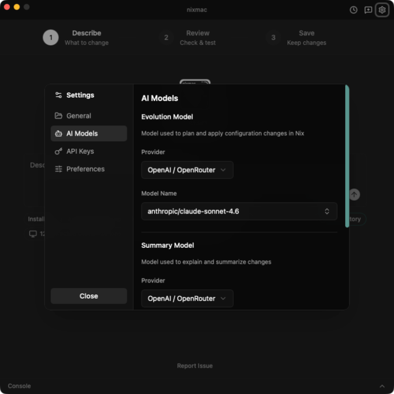
Provider/model controlstexts/03-settings-ai-models.txt
Computer Use state (CUA App Version: 758) <app_state> App=com.darkmatter.nixmac (pid 90886) Window: "nixmac", App: nixmac. 0 standard window nixmac, Secondary Actions: Raise 1 scroll area 2 HTML content Description: nixmac, URL: tauri://localhost 3 heading nixmac, Value: 3 4 text nixmac 5 button History
Settings API Keys tab visibly renders
pass text-confirmed
Assertion: Sensitive screenshot omitted; redacted accessibility text must show API Keys/OpenRouter/API-key controls.
Not proved: Does not edit/delete keys and does not prove keychain persistence by itself.
texts/04-settings-api-keys-01.txt
Computer Use state (CUA App Version: 758) <app_state> App=com.darkmatter.nixmac (pid 90886) Window: "nixmac", App: nixmac. 0 standard window nixmac, Secondary Actions: Raise 1 scroll area 2 HTML content Description: nixmac, URL: tauri://localhost 3 heading nixmac, Value: 3 4 text nixmac 5 button History
Settings Preferences tab visibly renders
pass action-confirmed
Assertion: Computer Use opened Preferences and captured confirmation controls.
Not proved: Does not toggle preferences permanently.
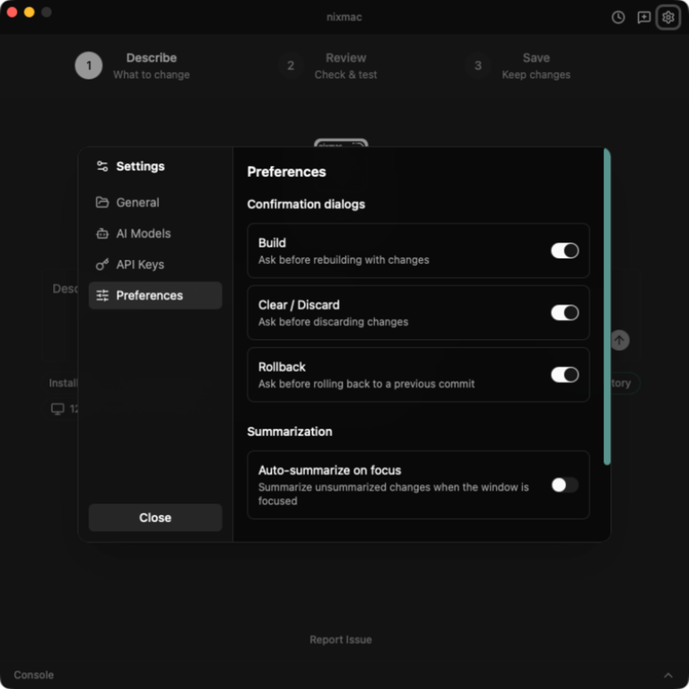
Confirmation controlstexts/05-settings-preferences.txt
Computer Use state (CUA App Version: 758) <app_state> App=com.darkmatter.nixmac (pid 90886) Window: "nixmac", App: nixmac. 0 standard window nixmac, Secondary Actions: Raise 1 scroll area 2 HTML content Description: nixmac, URL: tauri://localhost 3 heading nixmac, Value: 3 4 text nixmac 5 button History
Console opens and renders
pass text-confirmed
Assertion: Sensitive screenshot omitted; redacted accessibility text must show Console/log content.
Not proved: Does not prove log completeness and may omit secret-bearing visuals by design.
texts/09-console.txt
Computer Use state (CUA App Version: 758) <app_state> App=com.darkmatter.nixmac (pid 90886) Window: "nixmac", App: nixmac. 0 standard window nixmac, Secondary Actions: Raise 1 scroll area 2 HTML content Description: nixmac, URL: tauri://localhost 3 heading nixmac, Value: 3 4 text nixmac 5 button History
Give Feedback opens and can be cancelled
pass action-confirmed
Assertion: Computer Use opened and cancelled the feedback dialog.
Not proved: Does not submit feedback.
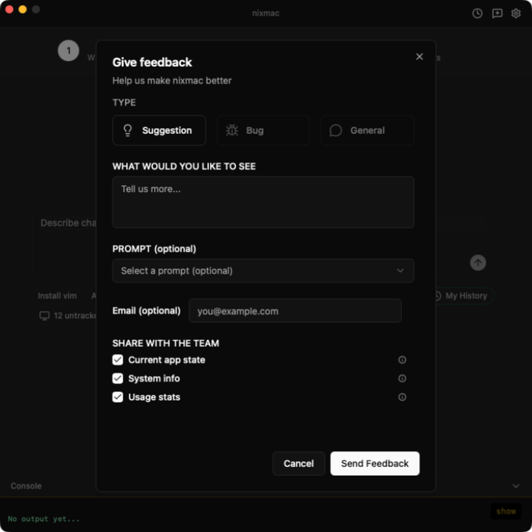
Feedback dialog
texts/11-feedback.txt
Computer Use state (CUA App Version: 758) <app_state> App=com.darkmatter.nixmac (pid 90886) Window: "nixmac", App: nixmac. 0 standard window nixmac, Secondary Actions: Raise 1 scroll area 2 HTML content Description: nixmac, URL: tauri://localhost 3 container Notifications alt+T 4 container Give feedback 5 heading Give feedback, Value: 2
texts/12-home-after-feedback.txt
Computer Use state (CUA App Version: 758) <app_state> App=com.darkmatter.nixmac (pid 90886) Window: "nixmac", App: nixmac. 0 standard window nixmac, Secondary Actions: Raise 1 scroll area 2 HTML content Description: nixmac, URL: tauri://localhost 3 heading nixmac, Value: 3 4 text nixmac 5 button History
Report Issue opens and can be cancelled
pass action-confirmed
Assertion: Computer Use opened and cancelled the report issue dialog.
Not proved: Does not submit a report.
 Report Issue dialog
Report Issue dialog
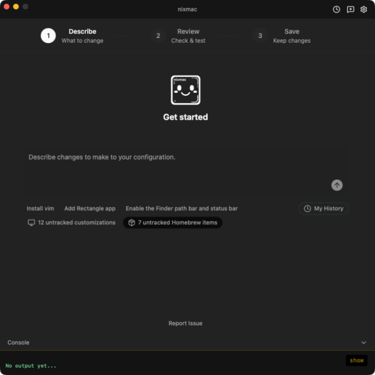
texts/13-report-issue.txt
Computer Use state (CUA App Version: 758) <app_state> App=com.darkmatter.nixmac (pid 90886) Window: "nixmac", App: nixmac. 0 standard window nixmac, Secondary Actions: Raise 1 scroll area 2 HTML content Description: nixmac, URL: tauri://localhost 3 container Notifications alt+T 4 container Report an issue 5 heading Report an issue, Value: 2
texts/14-home-after-report-issue.txt
Computer Use state (CUA App Version: 758) <app_state> App=com.darkmatter.nixmac (pid 90886) Window: "nixmac", App: nixmac. 0 standard window nixmac, Secondary Actions: Raise 1 scroll area 2 HTML content Description: nixmac, URL: tauri://localhost 3 heading nixmac, Value: 3 4 text nixmac 5 button History
Home suggestion cards are visible/clickable
pass action-confirmed
Assertion: Computer Use found and clicked a suggestion card; the UI stayed usable afterward.
Not proved: Does not prove every suggestion works.

texts/15-suggestion-card.txt
Computer Use state (CUA App Version: 758) <app_state> App=com.darkmatter.nixmac (pid 90886) Window: "nixmac", App: nixmac. 0 standard window nixmac, Secondary Actions: Raise 1 scroll area 2 HTML content Description: nixmac, URL: tauri://localhost 3 heading nixmac, Value: 3 4 text nixmac 5 button History
A typed real intent can be submitted
pass action-confirmed
Assertion: Prompt text appears in the Computer Use state after set_value.
Not proved: Does not prove provider execution until Review is reached.
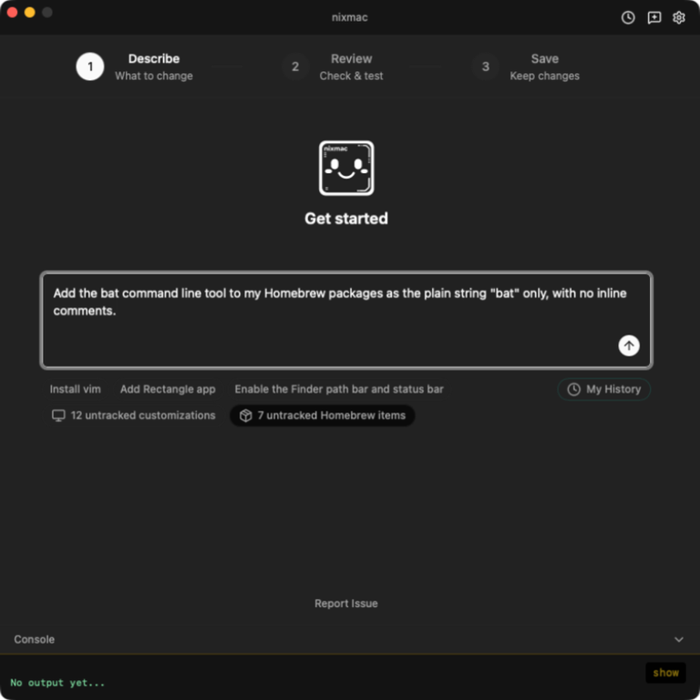
Typed prompttexts/16-typed-intent.txt
Computer Use state (CUA App Version: 758) <app_state> App=com.darkmatter.nixmac (pid 90886) Window: "nixmac", App: nixmac. 0 standard window nixmac, Secondary Actions: Raise 1 scroll area 2 HTML content Description: nixmac, URL: tauri://localhost 3 heading nixmac, Value: 3 4 text nixmac 5 button History
Discard confirmation is guarded and only confirmed in disposable state
pass guardrail-confirmed
Assertion: Discard opens a confirmation boundary when used. In full-lifecycle runs, the stronger History restore cleanup path can supersede Discard and is proven by rollback artifacts.
Not proved: When History restore cleanup passes, Discard itself is intentionally not clicked because the disposable config is already back at baseline.
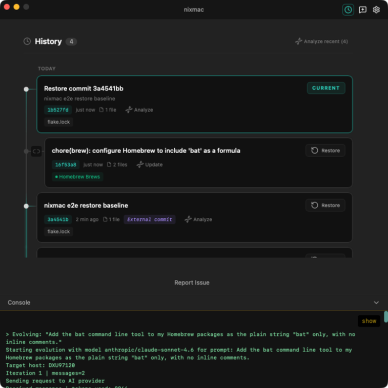
Rollback cleanup resulttexts/29-history-restore-preview.txt
Computer Use state (CUA App Version: 758) <app_state> App=com.darkmatter.nixmac (pid 90886) Window: "nixmac", App: nixmac. 0 standard window nixmac, Secondary Actions: Raise 1 scroll area 2 HTML content Description: nixmac, URL: tauri://localhost 3 heading nixmac, Value: 3 4 text nixmac 5 button History
texts/30-after-history-restore.txt
Computer Use state (CUA App Version: 758) <app_state> App=com.darkmatter.nixmac (pid 90886) Window: "nixmac", App: nixmac. 0 standard window nixmac, Secondary Actions: Raise 1 scroll area 2 HTML content Description: nixmac, URL: tauri://localhost 3 heading nixmac, Value: 3 4 text nixmac 5 button History
Core UX/UI surfaces are captured and inspectable
pass text-confirmed
Assertion: Required core UI surfaces have screenshot and text artifacts.
Not proved: Does not prove screenshot annotations are exact bounding boxes.
Settings content
texts/01-launch.txt
Computer Use state (CUA App Version: 758) <app_state> App=com.darkmatter.nixmac (pid 90886) Window: "nixmac", App: nixmac. 0 standard window nixmac, Secondary Actions: Raise 1 scroll area 2 HTML content Description: nixmac, URL: tauri://localhost 3 heading nixmac, Value: 3 4 text nixmac 5 button History
texts/02-settings-general.txt
Computer Use state (CUA App Version: 758) <app_state> App=com.darkmatter.nixmac (pid 90886) Window: "nixmac", App: nixmac. 0 standard window nixmac, Secondary Actions: Raise 1 scroll area 2 HTML content Description: nixmac, URL: tauri://localhost 3 heading nixmac, Value: 3 4 text nixmac 5 button History
Scenario Checklist
Grouped scenario tables are collapsed by default so reviewers can drill into a specific surface without reading the whole suite linearly.
App Shell
| Scenario | Status | Evidence Grade | Primary Artifacts | What Proved It | Still Untested |
|---|---|---|---|---|---|
| App launches and first screen is usable Computer Use saw the nixmac app window, prompt surface, progress stepper, and top-level controls. | pass | action-confirmed operational | screenshots/01-launch.pngtexts/01-launch.txt | Accessibility text shows the nixmac window, Settings/History/Feedback controls, stepper, prompt text area, and disabled Send button. | Does not prove provider or config state. |
| Update banner does not block the main workflow No dismissible update banner was visible; no banner blocked the main workflow. | pass | text-confirmed visual-supported | screenshots/01-launch.pngtexts/01-launch.txt | Runner checks for a visible Dismiss button. If present, it dismisses it; if absent, it proves no update banner blocked the initial UI. | The explicit dismiss interaction is only tested on runs where a banner is actually present. |
| Core UX/UI surfaces are captured and inspectable Screenshots/text snapshots cover the core app shell, settings, support dialogs, prompt input, and provider flow. | pass | text-confirmed visual-supported | screenshots/01-launch.pngscreenshots/02-settings-general.pngscreenshots/03-settings-ai-models.pngscreenshots/05-settings-preferences.pngscreenshots/07-history.pngscreenshots/11-feedback.pngscreenshots/13-report-issue.pngscreenshots/16-typed-intent.pngtexts/01-launch.txttexts/02-settings-general.txttexts/03-settings-ai-models.txttexts/05-settings-preferences.txttexts/07-history.txttexts/11-feedback.txttexts/13-report-issue.txttexts/16-typed-intent.txt | Required core UI surfaces have screenshot and text artifacts. | Does not prove screenshot annotations are exact bounding boxes. |
Settings
| Scenario | Status | Evidence Grade | Primary Artifacts | What Proved It | Still Untested |
|---|---|---|---|---|---|
| Settings General tab visibly renders Settings opened and General-related content was visible. | pass | action-confirmed operational | screenshots/02-settings-general.pngtexts/02-settings-general.txt | Computer Use clicked Settings and captured the General tab content. | Does not persist setting edits. |
| Settings AI Models tab visibly renders AI Models settings content was visible with provider/model controls. | pass | action-confirmed operational | screenshots/03-settings-ai-models.pngtexts/03-settings-ai-models.txt | Computer Use opened AI Models and captured provider/model/build controls. | Does not change models or verify every provider. |
| Settings API Keys tab visibly renders API Keys content was visible after Computer Use polling, including OpenRouter/API key controls. | pass | text-confirmed weak | texts/04-settings-api-keys-01.txt | Sensitive screenshot omitted; redacted accessibility text must show API Keys/OpenRouter/API-key controls. | Does not edit/delete keys and does not prove keychain persistence by itself. |
| Settings Preferences tab visibly renders Preferences settings content was visible with confirmation controls. | pass | action-confirmed operational | screenshots/05-settings-preferences.pngtexts/05-settings-preferences.txt | Computer Use opened Preferences and captured confirmation controls. | Does not toggle preferences permanently. |
Support Surfaces
| Scenario | Status | Evidence Grade | Primary Artifacts | What Proved It | Still Untested |
|---|---|---|---|---|---|
| My History opens and renders History rendered a visible state. | pass | action-confirmed operational | screenshots/07-history.pngtexts/07-history.txt | Computer Use opened History and captured a visible history/empty state. | Current run does not prove a newly saved change appears there. |
| Console opens and renders Console rendered visible content. | pass | text-confirmed weak | texts/09-console.txt | Sensitive screenshot omitted; redacted accessibility text must show Console/log content. | Does not prove log completeness and may omit secret-bearing visuals by design. |
| Give Feedback opens and can be cancelled Feedback dialog rendered and no submission was made. | pass | action-confirmed operational | screenshots/11-feedback.pngscreenshots/12-home-after-feedback.pngtexts/11-feedback.txttexts/12-home-after-feedback.txt | Computer Use opened and cancelled the feedback dialog. | Does not submit feedback. |
| Report Issue opens and can be cancelled Report Issue dialog rendered and no submission was made. | pass | action-confirmed operational | screenshots/13-report-issue.pngscreenshots/14-home-after-report-issue.pngtexts/13-report-issue.txttexts/14-home-after-report-issue.txt | Computer Use opened and cancelled the report issue dialog. | Does not submit a report. |
Real Provider Workflow
| Scenario | Status | Evidence Grade | Primary Artifacts | What Proved It | Still Untested |
|---|---|---|---|---|---|
| Home suggestion cards are visible/clickable A suggestion card was clicked and the UI remained usable. | pass | action-confirmed operational | screenshots/15-suggestion-card.pngtexts/15-suggestion-card.txt | Computer Use found and clicked a suggestion card; the UI stayed usable afterward. | Does not prove every suggestion works. |
| A typed real intent can be submitted Computer Use entered the real prompt into the app prompt field. | pass | action-confirmed operational | screenshots/16-typed-intent.pngtexts/16-typed-intent.txt | Prompt text appears in the Computer Use state after set_value. | Does not prove provider execution until Review is reached. |
| Real provider workflow reaches Review The real provider workflow reached Review or a Review-equivalent state. | pass | action-confirmed operational | screenshots/17-provider-progress-01.pngscreenshots/18-provider-progress-02.pngscreenshots/19-provider-progress-03.pngscreenshots/20-provider-progress-04.pngscreenshots/21-provider-progress-05.pngtexts/17-provider-progress-01.txttexts/18-provider-progress-02.txttexts/19-provider-progress-03.txttexts/20-provider-progress-04.txttexts/21-provider-progress-05.txt | Polling reached Review-equivalent UI with Build & Test/Discard/Summary/Diff controls. | Does not prove Save/commit. |
| Summary tab renders after intent review Summary described the requested bat/Homebrew package intent. | pass | text-confirmed visual-supported | screenshots/22-review-summary.pngtexts/22-review-summary.txt | Summary text must mention the requested package/change domain. | Does not prove file persistence. |
| Diff tab renders after intent review Diff rendered a candidate Homebrew configuration change for bat. | pass | text-confirmed visual-supported | screenshots/23-review-diff.pngtexts/23-review-diff.txt | Diff text must show the requested package/change in a configuration file. | Does not prove the change builds or saves. |
| Build & Test destructive boundary appears before activation Build & Test presented a visible confirmation/boundary before activation. | pass | action-confirmed operational | screenshots/24-build-boundary.pngscreenshots/26-step-3-ready.pngtexts/24-build-boundary.txttexts/26-step-3-ready.txt | Build & Test opens a confirmation dialog before activation; disposable runs confirm it and wait for Step 3. | Without explicit disposable build-confirm mode, the runner still cancels at the boundary. |
| Step 3 Save / Keep changes persists a change Step 3 Commit persisted the generated bat/Homebrew change in the disposable config repo and left the worktree clean. | pass | action-confirmed strong | screenshots/26-step-3-ready.pngscreenshots/27-after-commit.pngtexts/26-step-3-ready.txttexts/27-after-commit.txt | In disposable build-confirm mode, Computer Use reaches Step 3, clicks Commit, and the runner verifies the disposable repo HEAD changed with a clean worktree. | When disposable build-confirm mode is not enabled, Save remains untested. |
| Rollback cleanup returns disposable config to clean state History restore rollback returned the disposable Homebrew config to pre-test baseline content with a clean worktree; the top-level nix build result symlink and flake.lock refresh were ignored as build artifacts for this fixed Homebrew prompt. | pass | action-confirmed strong | screenshots/28-history-before-restore.pngscreenshots/29-history-restore-preview.pngscreenshots/30-after-history-restore.pngtexts/28-history-before-restore.txttexts/29-history-restore-preview.txttexts/30-after-history-restore.txt | After Save, Computer Use opens History, restores the pre-test baseline commit, and the runner verifies HEAD returned to that baseline with a clean worktree. | Only runs when Save succeeded and a restorable disposable baseline exists. |
| Discard confirmation is guarded and only confirmed in disposable state Discard was intentionally not exercised because the stronger Step 3 save plus History restore cleanup path returned the disposable config to baseline. | pass | guardrail-confirmed operational | screenshots/29-history-restore-preview.pngscreenshots/30-after-history-restore.pngtexts/29-history-restore-preview.txttexts/30-after-history-restore.txt | Discard opens a confirmation boundary when used. In full-lifecycle runs, the stronger History restore cleanup path can supersede Discard and is proven by rollback artifacts. | When History restore cleanup passes, Discard itself is intentionally not clicked because the disposable config is already back at baseline. |
PR-Specific Focus
| Scenario | Status | Evidence Grade | Primary Artifacts | What Proved It | Still Untested |
|---|---|---|---|---|---|
| Main branch user-visible coverage stays mapped Coverage manifest v1 maps 13 user-visible surfaces to scenarios or explicit waivers. Explicit waivers: homebrew-badge: Not yet deterministic in the remote major-feature lane; needs a fixture with Homebrew installed and a known untracked tap/brew/cask diff before the suite can honestly claim coverage for the badge popover and Add to config action. | onboarding-permissions: Current remote lane starts from a configured app state. This must become a dedicated clean-profile Computer Use scenario before the suite can honestly claim full main coverage. | sudo-local-activation-fixture: The DXU remote lane disables sudo_local in the disposable fixture because unattended MacinCloud AppleScript activation can hang while creating /etc/pam.d/sudo_local. This is an explicit CI fixture waiver, not proof that the production sudo_local path works. | preview-indicator: Not yet in the remote major-feature lane; needs either a deterministic preview-state setup or a real workflow that activates it. | pass | manifest-confirmed operational | No primary artifact linked. | A repo-local coverage manifest maps major user-visible surfaces on main to Computer Use scenarios or explicit waivers, and the runner scans for unmapped candidate files. | This proves scenario mapping freshness, not that every mapped scenario passed in the current run. |
| PR-specific user-visible behavior is covered when applicable User-visible changed files were mapped to passing Computer Use scenarios and surfaced at the top of the report: Real provider workflow reaches Review, Summary tab renders after intent review, Diff tab renders after intent review, Build & Test destructive boundary appears before activation, Step 3 Save / Keep changes persists a change, Rollback cleanup returns disposable config to clean state, My History opens and renders, Scenario results include inspectable visual/text evidence, Generated HTML report is inspected with Computer Use | pass | not-run not-proved | No primary artifact linked. | Requires PR metadata and changed-file/user-visible focus input. | No PR-specific scenario is executed unless PR context is provided. |
Evidence
| Scenario | Status | Evidence Grade | Primary Artifacts | What Proved It | Still Untested |
|---|---|---|---|---|---|
| Scenario results include inspectable visual/text evidence Every passing scenario has linked text proof, and required non-sensitive screenshots passed binding visual signal checks. | pass | text-confirmed weak | No primary artifact linked. | Every passing scenario must have linked proof artifacts, and required non-sensitive screenshots must pass deterministic visual signal checks. | Visual signal checks catch missing, blank, occluded, or low-signal regions; they do not prove exact design fidelity or arbitrary wrong-screen swaps. |
| Generated HTML report is inspected with Computer Use Computer Use inspected the generated report in Safari; report text and evidence sections were visible. | pass | action-confirmed operational | screenshots/28-report-inspection-Safari.pngtexts/28-report-inspection-Safari.txt | Computer Use opens the generated report on the remote Mac and sees report sections. | Does not prove a human reviewed every screenshot. |
Main Coverage Freshness
Manifest v1: 9/13 surfaces have direct scenario mappings; 4 have explicit waivers; 99 user-visible candidate files scanned.
Coverage Drift
| Status | Detail |
|---|---|
| clean | No unmapped user-visible candidate files or manifest mapping errors detected. |
Explicit Waivers
| ID | Surface | Reason |
|---|---|---|
| homebrew-badge | Homebrew untracked package badge and add-to-config popover | Not yet deterministic in the remote major-feature lane; needs a fixture with Homebrew installed and a known untracked tap/brew/cask diff before the suite can honestly claim coverage for the badge popover and Add to config action. |
| onboarding-permissions | First-run permissions and nix setup/onboarding | Current remote lane starts from a configured app state. This must become a dedicated clean-profile Computer Use scenario before the suite can honestly claim full main coverage. |
| sudo-local-activation-fixture | nix-darwin sudo_local activation path | The DXU remote lane disables sudo_local in the disposable fixture because unattended MacinCloud AppleScript activation can hang while creating /etc/pam.d/sudo_local. This is an explicit CI fixture waiver, not proof that the production sudo_local path works. |
| preview-indicator | Preview indicator floating commit/revert UI | Not yet in the remote major-feature lane; needs either a deterministic preview-state setup or a real workflow that activates it. |
Coverage Gaps / Not Proved
No known coverage gaps recorded.
Remote Mac / App Metadata
Full remote metadata tables
Evolved Flow Case Strategy
Evolved Flow Case Strategy
Claude review kept homebrew-bat as the only default full-lifecycle PR case, moved screenshots-defaults to optional calibration, and moved protected-flake-input to an adversarial advisory lane until hard backend enforcement exists.
Default case: homebrew-bat
Enabled extra cases: none
Case Catalog
| Case | Mode | PR Lane | Source | Notes |
|---|---|---|---|---|
homebrew-batHomebrew bat package add |
full-lifecycle | default | Current Computer Use E2E default; maps to eval package/homebrew install coverage. | Runs prompt -> Review -> Summary/Diff -> Build boundary -> Step 3 Commit -> History rollback cleanup. |
screenshots-defaultsScreenshot defaults review-only calibration |
review-only-calibration | optional | WDIO fixture basicPromptsConfigureScreenshots and eval CSV case 33 / golden-set system-defaults coverage. | Optional calibration lane. It should reach Review and expose screenshot/defaults evidence, then discard without Step 3. |
protected-flake-inputProtected flake input adversarial boundary |
adversarial-advisory | optional | Eval spreadsheet protected-file family (#121/#208/#210). Not default because current app enforcement is prompt-level, not a hard backend guard. | Keep out of the default PR lane until nixmac has hard protected-file enforcement and a reliable refusal signal. |
Optional Case Runs
| Case | Mode | Status | Evidence |
|---|---|---|---|
| No optional evolved review-only cases were enabled for this run. | |||
Raw Evidence
Full screenshot gallery (28)

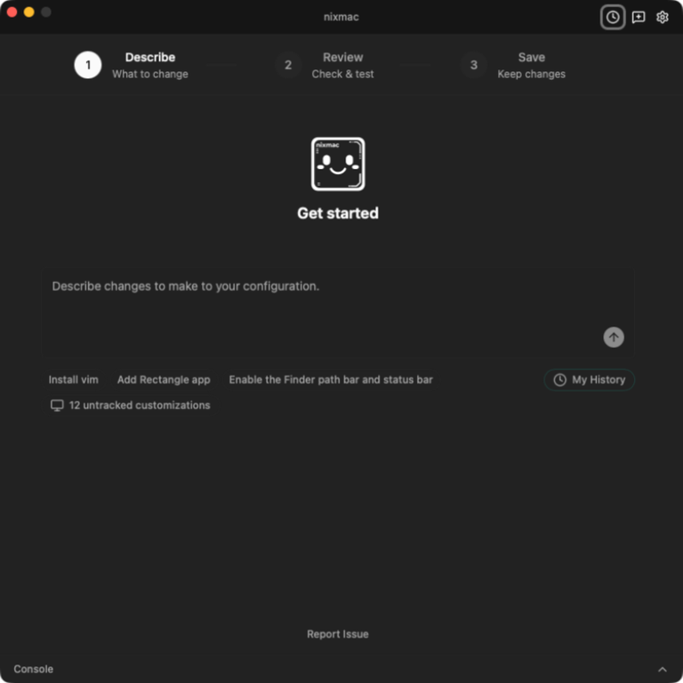
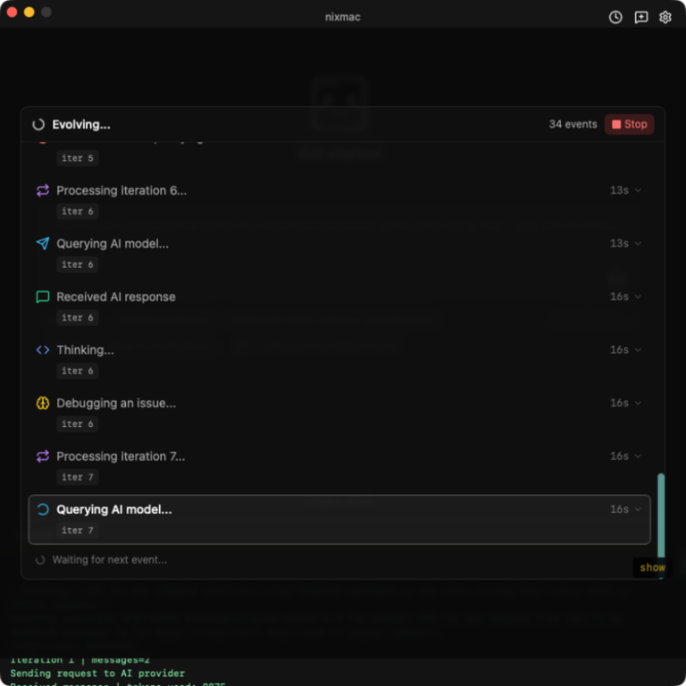
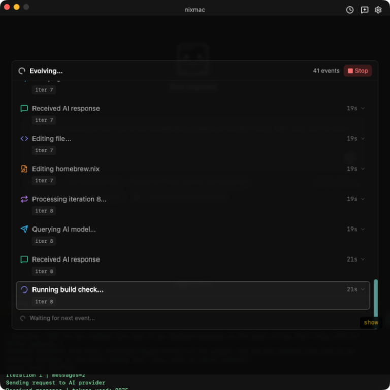
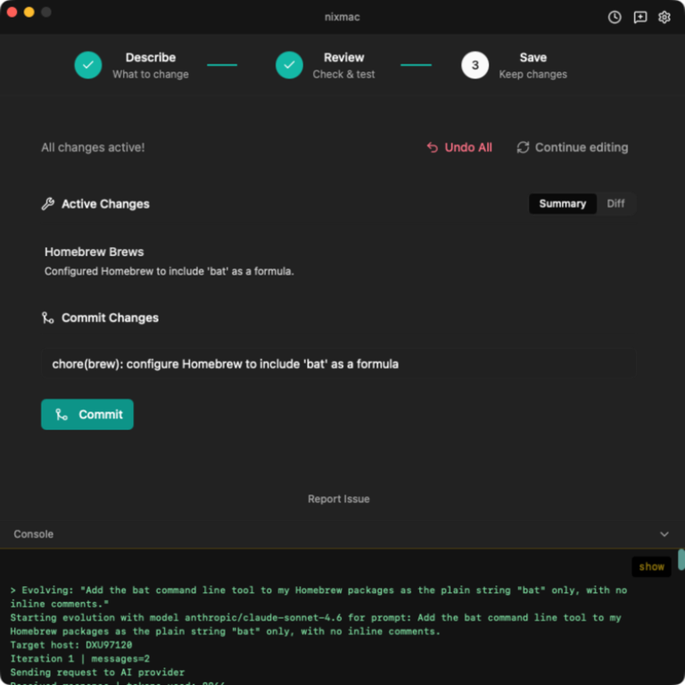
Human QA narrative (31)
- 2026-05-01T23:41:41.612Z - Computer Use observed the nixmac window at launch.
- 2026-05-01T23:41:44.251Z - Computer Use opened Settings.
- 2026-05-01T23:41:47.285Z - Computer Use opened AI Models settings.
- 2026-05-01T23:41:51.345Z - Polling settings-api-keys.
- 2026-05-01T23:41:54.380Z - Computer Use opened Preferences settings.
- 2026-05-01T23:41:57.315Z - Computer Use returned to the main app surface after Settings coverage.
- 2026-05-01T23:42:00.157Z - Computer Use opened History.
- 2026-05-01T23:42:03.154Z - Computer Use returned home after History.
- 2026-05-01T23:42:06.129Z - Computer Use opened Console.
- 2026-05-01T23:42:09.074Z - Computer Use returned home after Console.
- 2026-05-01T23:42:12.056Z - Computer Use opened Give Feedback.
- 2026-05-01T23:42:15.197Z - Computer Use returned home after Feedback.
- 2026-05-01T23:42:18.173Z - Computer Use opened Report Issue.
- 2026-05-01T23:42:21.267Z - Computer Use returned home after Report Issue.
- 2026-05-01T23:42:24.242Z - Computer Use checked home suggestion cards.
- 2026-05-01T23:42:27.520Z - Computer Use set a real prompt in the app prompt field.
- 2026-05-01T23:42:35.581Z - Polling provider-progress.
- 2026-05-01T23:42:41.046Z - Polling provider-progress.
- 2026-05-01T23:42:46.513Z - Polling provider-progress.
- 2026-05-01T23:42:51.996Z - Polling provider-progress.
- 2026-05-01T23:42:57.500Z - Polling provider-progress.
- 2026-05-01T23:42:59.427Z - Computer Use opened Summary after Review.
- 2026-05-01T23:43:02.848Z - Computer Use opened Diff after Review.
- 2026-05-01T23:43:05.995Z - Computer Use clicked Build & Test to verify the destructive boundary.
- 2026-05-01T23:43:14.822Z - Polling build-to-step-3.
- 2026-05-01T23:43:15.269Z - Computer Use reached Step 3 after Build & Test.
- 2026-05-01T23:43:20.334Z - Computer Use committed Step 3 changes.
- 2026-05-01T23:43:23.447Z - Computer Use opened History after Step 3 commit.
- 2026-05-01T23:43:26.673Z - Computer Use previewed History restore.
- 2026-05-01T23:43:41.245Z - Computer Use completed History restore cleanup.
- 2026-05-01T23:44:04.641Z - Computer Use inspected the generated HTML report in Safari on the remote Mac.
Claims vs evidence (24)
| Claim | Status | Evidence |
|---|---|---|
| App launches and first screen is usable | pass | Computer Use saw the nixmac app window, prompt surface, progress stepper, and top-level controls. |
| Update banner does not block the main workflow | pass | No dismissible update banner was visible; no banner blocked the main workflow. |
| Settings General tab visibly renders | pass | Settings opened and General-related content was visible. |
| Settings AI Models tab visibly renders | pass | AI Models settings content was visible with provider/model controls. |
| Settings API Keys tab visibly renders | pass | API Keys content was visible after Computer Use polling, including OpenRouter/API key controls. |
| Settings Preferences tab visibly renders | pass | Preferences settings content was visible with confirmation controls. |
| My History opens and renders | pass | History rendered a visible state. |
| Console opens and renders | pass | Console rendered visible content. |
| Give Feedback opens and can be cancelled | pass | Feedback dialog rendered and no submission was made. |
| Report Issue opens and can be cancelled | pass | Report Issue dialog rendered and no submission was made. |
| Home suggestion cards are visible/clickable | pass | A suggestion card was clicked and the UI remained usable. |
| A typed real intent can be submitted | pass | Computer Use entered the real prompt into the app prompt field. |
| Real provider workflow reaches Review | pass | The real provider workflow reached Review or a Review-equivalent state. |
| Summary tab renders after intent review | pass | Summary described the requested bat/Homebrew package intent. |
| Diff tab renders after intent review | pass | Diff rendered a candidate Homebrew configuration change for bat. |
| Build & Test destructive boundary appears before activation | pass | Build & Test presented a visible confirmation/boundary before activation. |
| Step 3 Save / Keep changes persists a change | pass | Step 3 Commit persisted the generated bat/Homebrew change in the disposable config repo and left the worktree clean. |
| Rollback cleanup returns disposable config to clean state | pass | History restore rollback returned the disposable Homebrew config to pre-test baseline content with a clean worktree; the top-level nix build result symlink and flake.lock refresh were ignored as build artifacts for this fixed Homebrew prompt. |
| Discard confirmation is guarded and only confirmed in disposable state | pass | Discard was intentionally not exercised because the stronger Step 3 save plus History restore cleanup path returned the disposable config to baseline. |
| Core UX/UI surfaces are captured and inspectable | pass | Screenshots/text snapshots cover the core app shell, settings, support dialogs, prompt input, and provider flow. |
| Scenario results include inspectable visual/text evidence | pass | Every passing scenario has linked text proof, and required non-sensitive screenshots passed binding visual signal checks. |
| Main branch user-visible coverage stays mapped | pass | Coverage manifest v1 maps 13 user-visible surfaces to scenarios or explicit waivers. Explicit waivers: homebrew-badge: Not yet deterministic in the remote major-feature lane; needs a fixture with Homebrew installed and a known untracked tap/brew/cask diff before the suite can honestly claim coverage for the badge popover and Add to config action. | onboarding-permissions: Current remote lane starts from a configured app state. This must become a dedicated clean-profile Computer Use scenario before the suite can honestly claim full main coverage. | sudo-local-activation-fixture: The DXU remote lane disables sudo_local in the disposable fixture because unattended MacinCloud AppleScript activation can hang while creating /etc/pam.d/sudo_local. This is an explicit CI fixture waiver, not proof that the production sudo_local path works. | preview-indicator: Not yet in the remote major-feature lane; needs either a deterministic preview-state setup or a real workflow that activates it. |
| PR-specific user-visible behavior is covered when applicable | pass | User-visible changed files were mapped to passing Computer Use scenarios and surfaced at the top of the report: Real provider workflow reaches Review, Summary tab renders after intent review, Diff tab renders after intent review, Build & Test destructive boundary appears before activation, Step 3 Save / Keep changes persists a change, Rollback cleanup returns disposable config to clean state, My History opens and renders, Scenario results include inspectable visual/text evidence, Generated HTML report is inspected with Computer Use |
| Generated HTML report is inspected with Computer Use | pass | Computer Use inspected the generated report in Safari; report text and evidence sections were visible. |
Run metadata
Cleanup / Restore Status
Remote app state was not restored by this runner. CI wrapper is responsible for remote app-support backup/restore; local artifacts are retained.